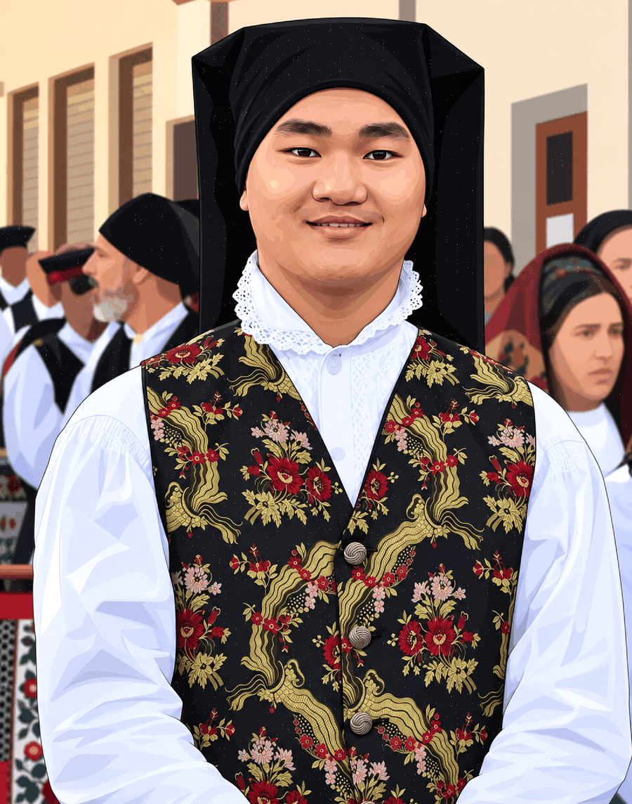

Le idee
prendono
forma.
Un segno può raccontare tutto. Esploro identità visive, illustrazione e fotografia per trasformare intuizioni in immagini che restano.
Behind the Art.
Dentro il processo.
Dallo scatto iniziale ai tracciati, dalle prime campiture ai dettagli: il video mostra la costruzione del ritratto in modo pulito, senza scritte sovrapposte al frame.
Prima il riferimento fotografico, poi i tracciati, quindi i colori e infine il lavoro completo. La sequenza è più lunga e lascia spazio a ogni passaggio, così il processo si legge davvero.
Lavori che
lasciano il segno.
Una selezione dedicata esclusivamente al design: identità visive, illustrazione, fotografia e composizione editoriale. I nuovi lavori arriveranno qui.
Non trovo nulla qui.
Prova un'altra parola oppure cambia il filtro.

Ciao, sono
Xinmin.
Le idee non
stanno ferme.
Mi piace prendere un'intuizione, scomporla e darle una forma che non ti aspetti.
Sono Xinmin Giuseppe Farano. Creo identità visive, illustrazioni e fotografie. Qui mi presento con un autoritratto vettoriale nato da una fotografia reale: un'immagine più essenziale, ma ancora profondamente mia.
Nella colonna a sinistra trovi il risultato finale. Nella sezione Behind the Art, poco sopra, puoi vedere il percorso: foto di partenza, tracciati, colori e rifinitura.
C’è anche un lato
universitario.
Oltre alla grafica, studio Ingegneria Informatica all’Università di Cagliari. Ho dedicato uno spazio indipendente ai miei appunti originali, ordinati anno per anno e materia per materia.
Entra nell'archivio universitarioFacciamo
qualcosa
di bello.
Un’identità visiva, un’illustrazione, uno shooting fotografico o una collaborazione. Raccontami la tua idea.
X1ngraphic1@gmail.com ↗